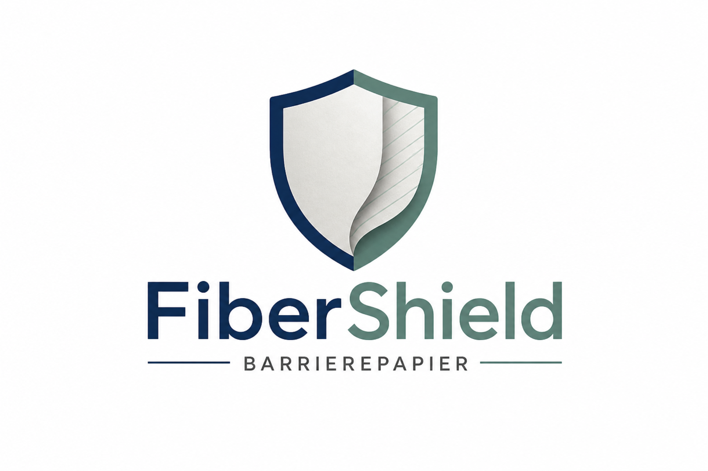

Mehmet Süren
Projektleiter
Projektsteuerung

Das Bild bleibt bewusst groß. Der Pitch fokussiert nur auf die drei entscheidenden Aussagen zur Rohstoffwende.
Unbenutzte Kraftwellpappe: hochwertig, unbedruckt und geeignet als glaubwürdiger Recyclingrohstoff.
Die grau/braune Naturfarbe bleibt erhalten und wird als sichtbares Nachhaltigkeitsmerkmal positioniert.
Die funktionelle Beschichtung sichert die Anwendung und schafft neue Produktleistung trotz Recyclingfaser.

Ermöglicht 1600 m/min bei verbesserter Blattbildung und reduzierter Zweiseitigkeit.

Ein definierter Auftrag, danach gezielte Trocknung.